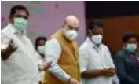
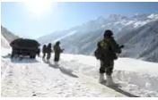
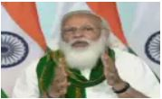
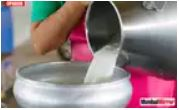
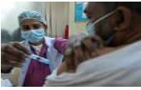
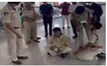
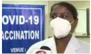
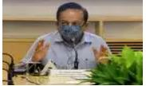

LATEST NEWS

Tamil Nadu polls: BJP takes 60-seat list to AIADMK, may get 21
Chief minister Edappadi K Palaniswami and his deputy O Panneerselvam on Sunday met Union home minister Amit Shah to finalise seats for the BJP in the AIADMK alliance for the forthcoming assembly polls. The discussion that started around 10pm continued beyond midnight at a private hotel in the city after Shah returned from his campaign in Karaikal in the Union territory of Puducherry and Villupuram in
Tamil Nadu.

Army to mark ‘unheld areas’ with expeditions
The Army is firmly pushing for mountaineering expeditions as well as research studies to publicise and consolidate India’s legitimate territorial claims in areas along the northern borders to counter the salami-slicing tactics of an expansionist China.

Need to expand farming beyond wheat, rice: PM
Prime Minister Modi on Monday said India needs a food processing revolution while calling for the need to give such options to farmers in which "they are not limited to growing wheat and rice."
'Shouldn't allow Modi, RSS to insult Tamil culture'

Opinion: Will milk price hike resolve farm crisis?
Dairy farmers in Haryana are planning to increase the cost of milk to Rs 100 a litre to put pressure on the government
India rout Germany but hockey fans feel robbed
There were two big talking points in the Indian men's team's return to competitive hockey on Sunday. They blanked Germany 6-1, but fans couldn't watch any of the action. The doors of the stadium in Krefeld were understandably closed to the public due to the pandemic; but no livestream of an international game, albeit an unofficial one, resulted in a lot of unhappy fans.

Ph-2 vaccination: Who can get inoculated & how

High drama at Tirupati airport as Naidu stages sit-in
Former chief minister N Chandrababu Naidu squatted on the floor at Tirupati airport after sleuths of Tirupati police wing served notice to Naidu and detained him on Monday.

What PM told nurse who gave him vaccine shot
Prime Minister Narendra Modi was administered coronavirus vaccine on Monday by Puducherry nurse P Niveda. Another nurse, who assisted sister Niveda, was Rosamma Anil from Kerala. PM remarked, "Laga bhi diya aur pata bhi nahin chala (Already done? I didn't even feel it)."
In pics: Miss India Delhi Mansi Sehgal joins AAP
Click below to view more zpic from Delhi

Live: Naveen Patnaik takes Covid-19 vaccine
Congress leader Rahul Gandhi dances with school students in Tamil Nadu’s Mulagumoodubn. Rahul Gandhi took to the dance floor with the students of St. Joseph's Matriculation Higher Secondary School.